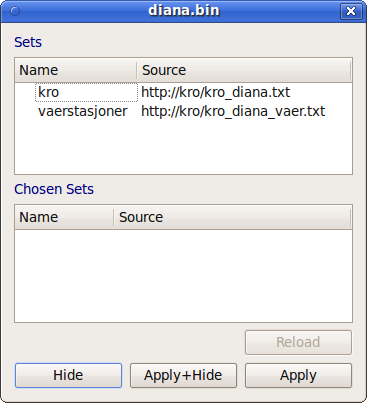

Diana User Guide: Weather stations |
Previous: Satellite and radar images
|
Next: Objects
|
Index
Satellite and radar images

The available sets of stations are shown in the upper list. Select one of these to add it to the list of chosen sets in the lower list.
It is possible to select more than one set of stations.
To remove a set from the lower list, deselect the corresponding set in the upper list.
To reload a set of stations, select it in the lower list and click the
Reload
button.
Diana User Guide: Satellite and radar images |
Previous: Satellite and radar images
|
Next: Objects
|
Index